|
FC Groningen - Roda JC (4-4) 8 mei 2005 |
FC
Groningen - Roda JC (4-4) 8 mei 2005
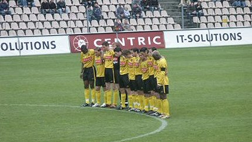
Een minuut stilte voor de verongelukte vriendin van Pa
Modou Kah.
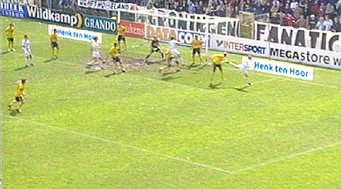
Uit een corner van Fledderus kopt Nevland 1-0 binnen (6').
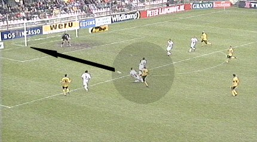
Met een afstandschot scoort Cissé de gelijkmaker: 1-1,
(37').
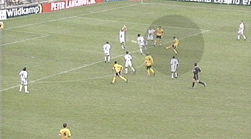
Even later is Sergio succesvol met een afstandschot: 1-2, (39').
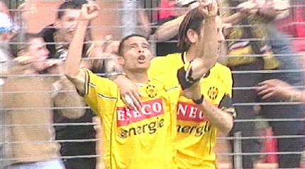
Hallelujah....
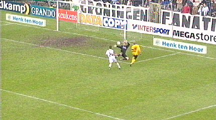
Kone brengt de stand met technisch vakmanschap op 1-3, (64').
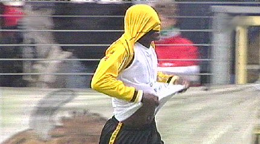
Arouna heeft een boodschap onder zijn shirt...
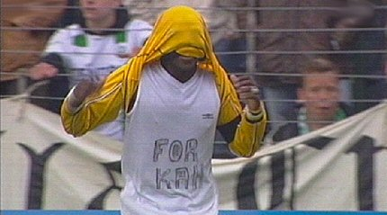
For Kah! Scheidsrechter Kuipers weet niet wat
piëteit is en bestraft Kone's
gebaar met geel.
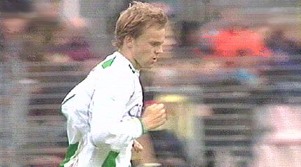
Een minuut later scoort Nevland zijn tweede doelpunt: 2-3, (65').
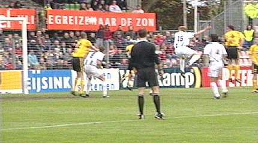
Het Gronings feestje gaat verder: 3-3 door Drent, (67').
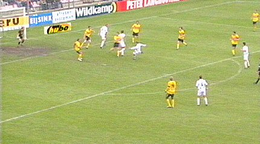
Het defensief geklungel bij Roda neemt beschamende vormen aan en
Nevland scoort namens FC Groningen 4-3, (71').
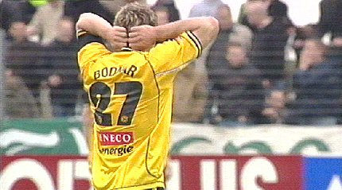
Bodnar zag een hem kenmerkend kanonschot nog net gestopt door
doelman Roorda.
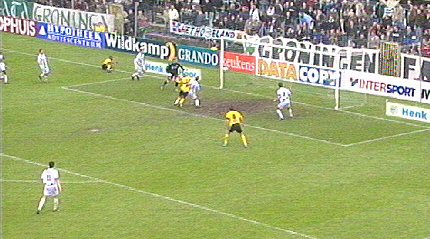
In het knotsgekke duel weet Kone weer de gelijkmaker te scoren:
4-4, (82').